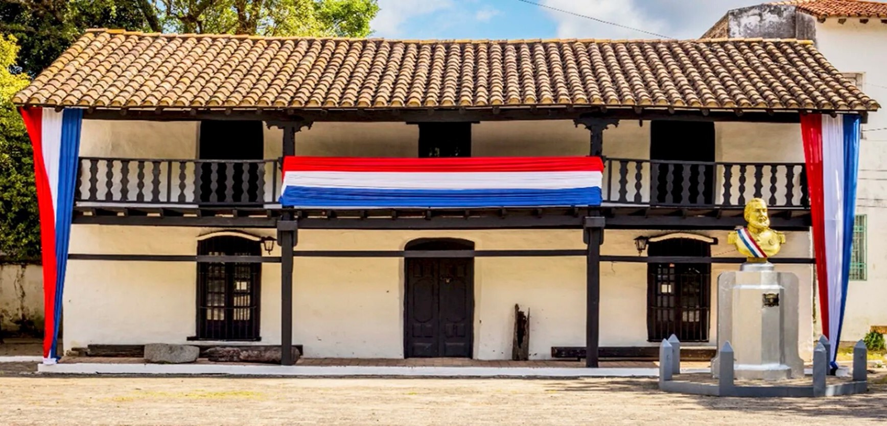
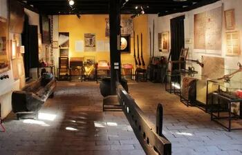
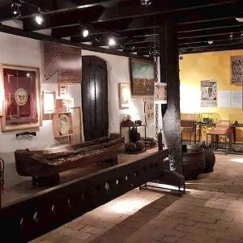
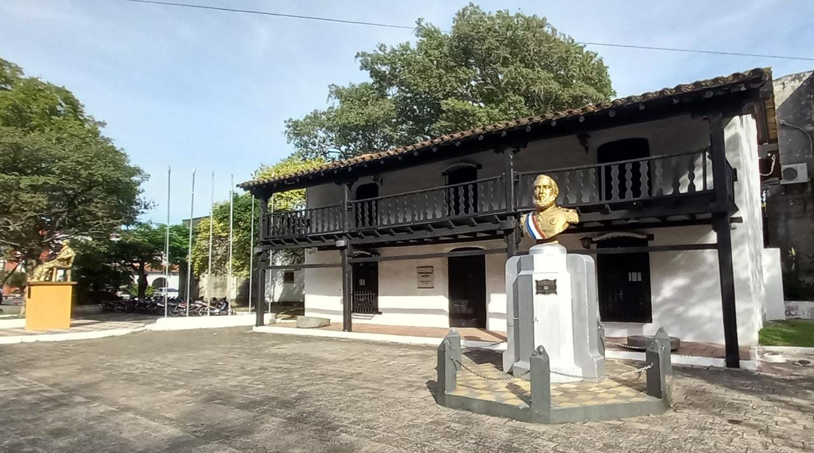

El Museo Cabildo de Pilar es un importante centro de conservación de nuestra historia, en el que actualmente se exponen piezas restauradas de su patrimonio que estuvieron guardadas en un depósito durante 3 años, asi como objetos y muebles de personalidades de la comunidad, armas y objetos de guerra de la Triple Alianza. El Museo cuenta con dos plnatas; en la planta baja se exhiben principalmente objetos y armas de la Guerra contra la Triple Alianza. En la antesala se encuentran muebles y objetos de personalidades del lugar. Alberga también piezas de arte sacro, aquellas que hicieron parte de la Iglesia de Pilar y lograron salvarse del incendio que consumió el edificio.
Actualmente se expone en el Museo Cabildo las piezas restauradas de su patrimonio que estuvieran guardadas en un depósito durante 3 años. El Museo Cabildo de Pilar es un lugar histórico de gran importancia en Paraguay. Está ubicado en la localidad de Pilar, a poco más de dos horas de la capital, Asunción. El museo está ubicado en el antiguo Cabildo, una construcción que data de la época colonial. La arquitectura del museo refleja la influencia española en el país.
El museo fue fundado en el año 1985 y abarca distintas etapas históricas de Paraguay. La primera sala expone objetos de la colonia española y de la época de la independencia. La segunda sala aborda el período del presidente Francia y la Guerra del Chaco. La tercera sala expone objetos de la Guerra del Chaco y los años posteriores. El museo es famoso por su colección de artesanías, textiles, joyería y piezas de metal. La mayoría de las piezas tienen su origen en la región. Además, se pueden observar fotografías y documentos históricos. El museo también ofrece varias actividades educativas, tales como talleres de artesanía y visitas guiadas. El museo organiza también varias exposiciones temporales, que se exhiben en distintas salas del edificio. Estas exposiciones giran en torno a temas históricos, artísticos y culturales. El museo es un lugar muy visitado, tanto por la gente de Pilar como por visitantes de otras partes de Paraguay.
El museo Cabildo de Pilar está considerado un importante lugar de la cultura paraguaya. Está ubicado en una zona tranquila y verde, rodeado de árboles y un jardín con plantas y flores. En la entrada del museo hay una fuente y una estatua en honor a las madres paraguayas. El museo es una atracción turística de la región y un espacio cultural de gran importancia.
   